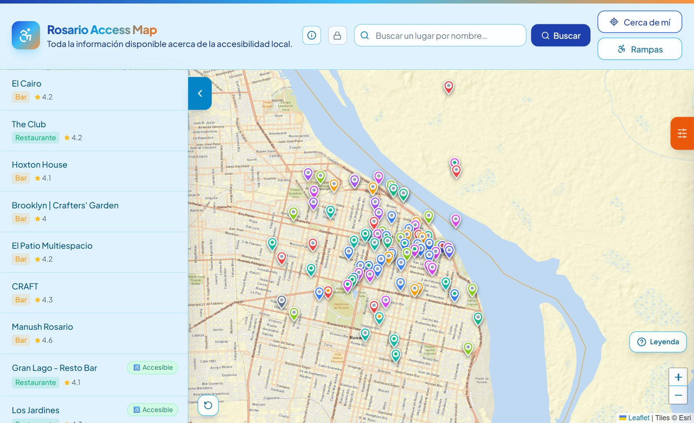
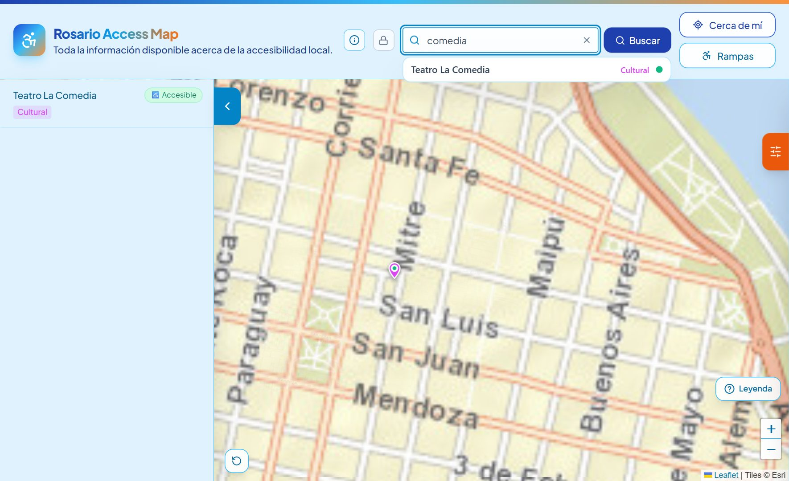
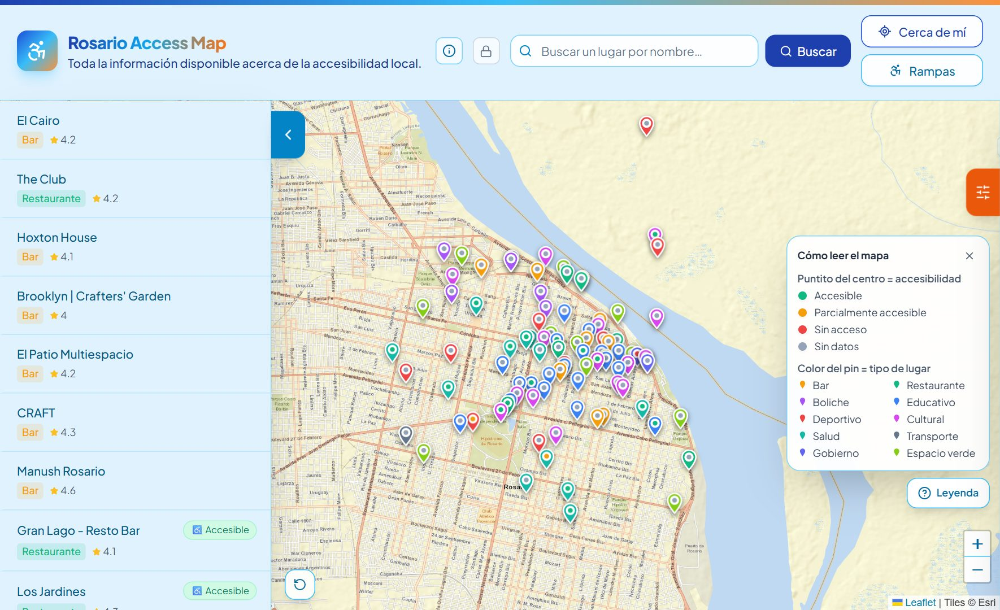
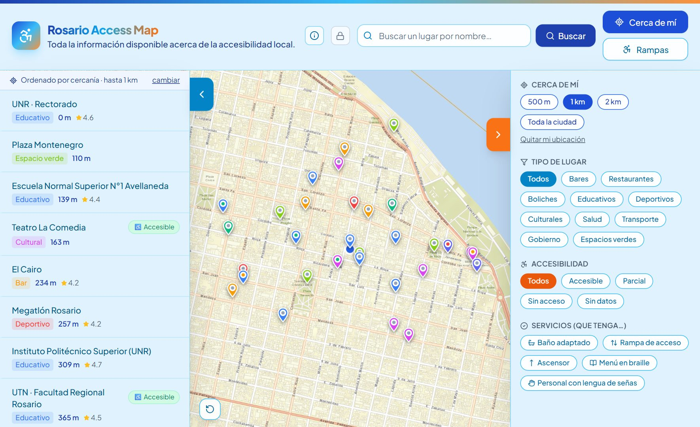
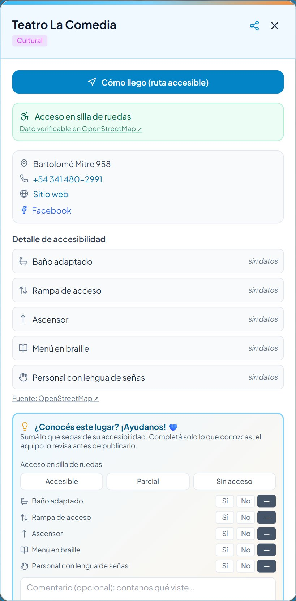
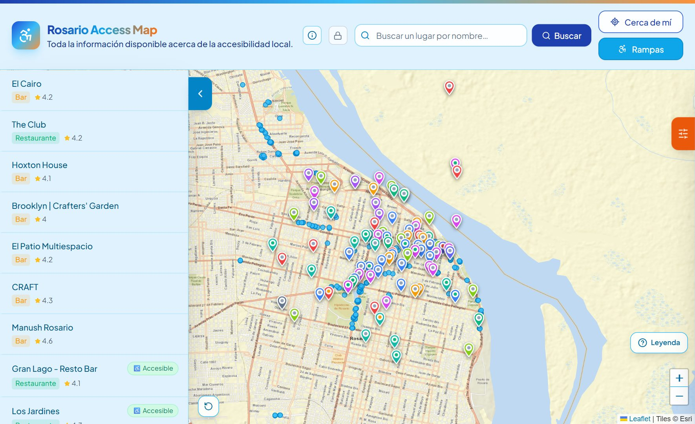
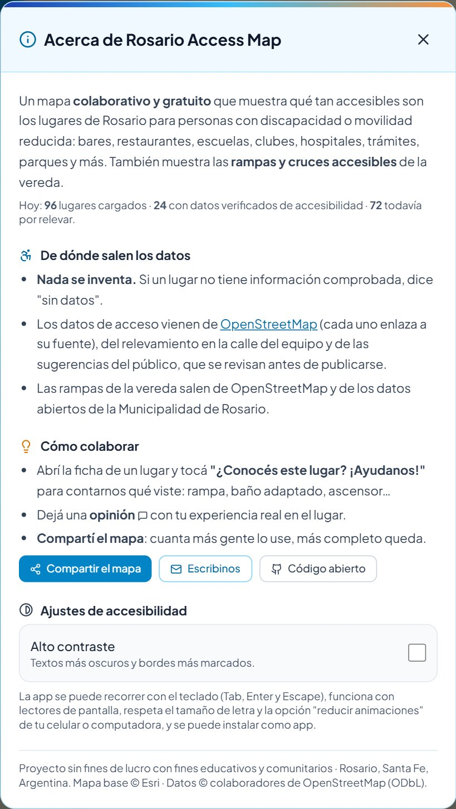
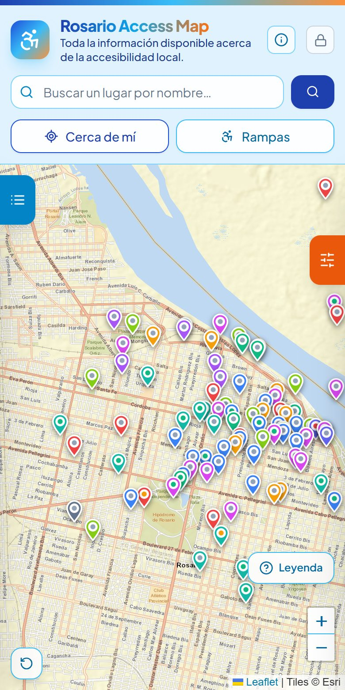
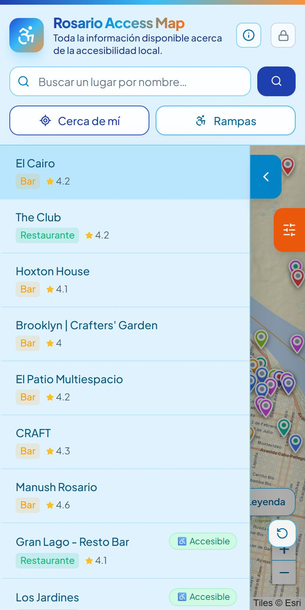
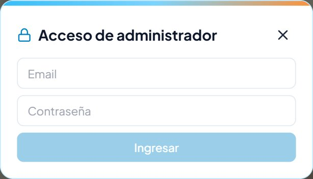

Guía completa de uso
Todo lo que tiene la app y cómo se usa: lo que ve el público, lo que hace el administrador, de dónde salen los datos y cómo se mantiene funcionando.
Nada se inventa. Solo se cargan datos reales que se puedan confirmar. Ante la duda, se deja "sin datos": es mejor no tener un dato que tener uno falso, porque alguien en silla de ruedas va a decidir a dónde ir según lo que diga el mapa.
Rosario Access Map es una página web que funciona como una app: se abre desde cualquier navegador y también se puede instalar en el celular. Muestra un mapa de Rosario con lugares (bares, restaurantes, escuelas, clubes, hospitales, oficinas públicas, parques) y para cada uno dice qué tan accesible es para una persona con discapacidad o movilidad reducida. También muestra las rampas y cruces accesibles de la vereda.
Cualquiera puede consultar el mapa, dejar una opinión o proponer un dato. El administrador (vos y la gente de confianza que sumes) verifica y publica.
| Pieza | Qué es | Dónde vive |
|---|---|---|
| La app lo que ve la gente | El código del programa. | Se guarda en GitHub y se publica en internet con Vercel. |
| La base de datos lo que se va cargando | Accesibilidad relevada, opiniones, sugerencias, fotos, lugares nuevos y las cuentas de administrador. | Supabase (supabase.com). |
| Los datos base lo que viene de fábrica | Los 96 lugares originales, sus datos de contacto y las 1.003 rampas. | Archivos dentro del propio código. |
Cuando se modifica el código, se sube a GitHub y Vercel lo publica solo en uno o dos minutos. Cuando un administrador carga un dato desde la app, va directo a Supabase y lo ve todo el mundo al instante, sin publicar nada.

Tabla para ir directo a lo que necesitás. El número indica la sección de esta guía donde está explicado.
| Quiero… | Uso… | Quién puede | Ver |
|---|---|---|---|
| Encontrar un lugar por nombre | El buscador | Cualquiera | 3.1 |
| Ver qué hay accesible cerca de donde estoy | Botón "Cerca de mí" | Cualquiera | 3.1 |
| Ver solo lugares con baño adaptado, rampa, etc. | Filtros (pestaña naranja) | Cualquiera | 3.4 |
| Saber cómo llegar en silla de ruedas | "Cómo llego" en la ficha | Cualquiera | 3.5 |
| Ver las rampas de la vereda | Botón "Rampas" | Cualquiera | 3.6 |
| Contar cómo me fue en un lugar | Opiniones en la ficha | Cualquiera | 3.7 |
| Proponer un dato de accesibilidad | "¿Conocés este lugar?" | Cualquiera | 3.7 |
| Mandarle un lugar a alguien | Botón compartir de la ficha | Cualquiera | 3.5 |
| Sumar a alguien al equipo | Crear usuario en Supabase | Vos | 4.2 |
| Cargar datos parado frente al lugar | Botón "Relevar" | Admin | 4.4 |
| Cargar datos desde casa | Google Maps + "Editar" | Admin | 4.5 |
| Corregir un lugar puntual | "Editar" en la ficha | Admin | 4.6 |
| Revisar lo que propuso la gente | Botón "Sugerencias" | Admin | 4.7 |
| Agregar un lugar que no está en el mapa | Botón "Agregar lugar" | Admin | 4.8 |
| Subir fotos de un lugar | "Agregar foto" en la ficha | Admin | 4.9 |
| Borrar una opinión fuera de lugar | Tachito al lado de la opinión | Admin | 4.9 |
| Ver cómo viene la carga de datos | Botón "Análisis" | Admin | 4.10 |
| Saber cuánta gente entra | Analytics de Vercel | Vos | 6.5 |

Muestra solamente Rosario: no se puede arrastrar hacia otra ciudad ni alejar hasta ver toda la provincia. Cada pin es un lugar y lleva dos colores:
Verde: accesible en silla de ruedas
Ámbar: parcialmente accesible
Rojo: sin acceso
Gris: todavía sin datos
Bar
Restaurante
Boliche
Educativo
Deportivo
Cultural
Salud
Transporte
Gobierno
Espacio verde

Se abre y se cierra con la pestaña celeste. Muestra los lugares que pasan los filtros activos, cada uno con su tipo, el puntaje de Google, la etiqueta "Accesible", "Parcial" o "Sin acceso" si tiene dato, y la distancia cuando está activo "Cerca de mí". Tocar un lugar abre su ficha. En el celular la lista se cierra sola al elegir.
Se abren con la pestaña naranja, que muestra un puntito blanco cuando hay algún filtro puesto.
Los filtros actúan a la vez sobre el mapa, la lista y el buscador.

Se abre al tocar un pin, un lugar de la lista o un resultado del buscador. De arriba hacia abajo tiene:

Con el botón Rampas aparecen 1.003 puntos celestes: rebajes de cordón, rampas, ascensores públicos, entradas accesibles y cruces con baldosas para personas ciegas. Al tocar un punto se muestra la dirección aproximada. Los datos son de OpenStreetMap.

En la ficha hay dos formularios distintos, y conviene no confundirlos:
| "¿Conocés este lugar? ¡Ayudanos!" | Opiniones | |
|---|---|---|
| Para qué | Proponer datos de accesibilidad: silla de ruedas y los cinco criterios. | Contar una experiencia en el lugar o sugerir una mejora de la app. |
| Se publica | No. Queda pendiente hasta que un administrador la apruebe. | Sí, al instante. |
| Qué se completa | Solo lo que la persona sabe. Comentario y nombre son opcionales. | El texto es obligatorio (hasta 600 letras). Estrellas y nombre son opcionales. |
Las opiniones tienen cuatro protecciones: un campo invisible que solo completan los programas automáticos, una pausa de 2 minutos entre opiniones de una misma persona para un mismo lugar, un tope de 5 opiniones por lugar cada 10 minutos y un largo máximo de texto. Si igual entra algo que no corresponde, el administrador lo borra (ver 4.9).

Al abrir la app en el celular, el navegador ofrece "Agregar a la pantalla de inicio" (en iPhone: botón compartir → Agregar a inicio). Queda con su propio ícono, se abre a pantalla completa y funciona aunque no haya señal, mostrando lo último que cargó.
Cuando se publica una versión nueva, a quien tenga la app abierta le aparece un cartel "Hay una versión nueva" con el botón Actualizar. La app revisa esto cada hora.
Al pegar el enlace en WhatsApp o en redes sale una tarjeta con título, descripción e imagen. El sitio está verificado en Google Search Console y Google lo tiene indexado. Lo que más ayuda a aparecer arriba en las búsquedas es que otros sitios (asociaciones, medios, el municipio) pongan un enlace a la app.



El registro público está cerrado: las cuentas las creás vos a mano. Cualquier persona con cuenta puede editar y relevar igual que vos, así que conviene sumar solo gente de confianza.
Para quitar a alguien: Authentication → Users → los tres puntitos de esa persona → Delete user. Solo le saca el acceso; no borra nada de lo que cargó.
Todas las formas de cargar datos llenan lo mismo:
Para cuando estás parado frente al lugar o caminando por la zona.
Arriba se ve el avance general, por ejemplo "38 de 96 lugares con datos".
Para cargar sin moverte, usando lo que ya publica Google Maps.
| Lo que dice Google | Lo que se carga |
|---|---|
| "Entrada accesible para personas en silla de ruedas" | Acceso general: Accesible |
| "Baño accesible para personas en silla de ruedas" | Baño adaptado: Sí |
| No figura | Se deja en "—" (sin datos) |
Google casi nunca informa rampa, braille ni lengua de señas. Esos datos salen del relevamiento en la calle, de llamar al lugar o de las sugerencias del público.
Buscar el lugar, abrir su ficha y tocar Editar. Se elige el acceso general y cada criterio, y se toca Guardar. Se publica al instante y queda registrada la fecha.
El botón Sugerencias muestra un globito naranja con la cantidad pendiente. Cada sugerencia indica el lugar, los datos propuestos, el comentario y quién la mandó.
Un lugar agregado desde la app se puede eliminar con el botón Borrar lugar de su ficha. Los 96 lugares originales no se pueden borrar desde la app.
El botón naranja Análisis muestra:
| Dato | Fuente | Dónde se guarda |
|---|---|---|
| Los 96 lugares originales | Cargados a mano, con ubicaciones reales | En el código |
| Acceso en silla de ruedas de 24 de esos lugares | OpenStreetMap, con enlace para verificar | En el código |
| Dirección, teléfono, web y redes de 33 lugares | OpenStreetMap | En el código |
| 1.003 rampas y cruces accesibles | OpenStreetMap | En el código |
| Accesibilidad cargada por el equipo | Relevamiento y sugerencias aprobadas | Supabase |
| Opiniones | El público | Supabase |
| Sugerencias de datos | El público | Supabase |
| Lugares agregados desde la app | Administradores | Supabase |
| Fotos | Administradores | Supabase |
| Registro de errores | La app, sola | Supabase |
| Acción | Público | Administrador |
|---|---|---|
| Ver lugares, accesibilidad, opiniones y fotos | Sí | Sí |
| Dejar una opinión | Sí | Sí |
| Proponer datos de accesibilidad | Sí (quedan pendientes) | No le hace falta: edita directo |
| Editar la accesibilidad de un lugar | No | Sí |
| Aprobar o rechazar sugerencias | No | Sí |
| Agregar o borrar lugares | No | Sí |
| Subir o borrar fotos, borrar opiniones | No | Sí |
| Ver el registro de errores | No | Sí |
Estas reglas están puestas en la base de datos, no solo en la pantalla: aunque alguien intente saltearse la app, Supabase no lo deja escribir sin una cuenta.
La Municipalidad informa 11.129 rampas en la ciudad (dato de 2022), pero no publica dónde está cada una: solo da el total por distrito. Se revisaron el portal de datos abiertos, el mapa municipal y sus servicios, y no existe un archivo con las ubicaciones. La única manera de conseguirlo es un pedido de acceso a la información pública, solicitando la capa de rampas de la Secretaría de Obras Públicas.
Mientras tanto, la capa de rampas usa OpenStreetMap, que se puede actualizar cada tanto para sumar lo que la comunidad vaya cargando allí.
Hay un programa preparado que consulta Google para los 70 lugares principales y trae "entrada accesible" y "baño accesible". No los publica: los deja como sugerencias pendientes para que las apruebes una por una. Para usarlo hace falta una clave de Google Maps, que es gratuita para este volumen pero pide registrar una tarjeta.
Doble clic en SUBIR A GITHUB.bat. Eso guarda el código en GitHub y, como Vercel está conectado a GitHub, la versión nueva se publica sola en uno o dos minutos. No hay que hacer nada más.
Los datos que se cargan desde la app (accesibilidad, opiniones, lugares, fotos) no necesitan nada de esto: se guardan y se ven al instante.
Doble clic en PUBLICAR EN VERCEL.bat. Compila y publica directamente desde tu computadora. Si Vercel pide confirmar que sos vos, abre una dirección en el navegador: se entra, se toca "Confirm" y sigue solo.
En vercel.com → proyecto → Deployments está el historial de publicaciones y se ve si alguna falló.
Cuando una función nueva necesita guardar algo que antes no existía, viene acompañada de un archivo en la carpeta supabase. Se aplica así:
Los seis archivos que hay hoy ya están aplicados. Sirven como respaldo: si alguna vez hubiera que armar la base de cero, se corren en este orden: schema, migracion-auth, migracion-relevamiento, migracion-sugerencias, migracion-fotos, migracion-lugares.
En el plan gratuito, Supabase pausa el proyecto si pasa una semana sin que nadie use la app. Mientras está pausado, la app se ve pero sin opiniones ni datos cargados, y no se puede entrar como administrador. Se soluciona entrando a supabase.com y tocando Restore project; en dos o tres minutos vuelve todo. No se pierde nada.
La app necesita tres claves para conectarse a los servicios. No se suben a GitHub: están en el archivo .env.local de tu computadora y en Vercel → Settings → Environment Variables.
| Clave | Para qué | Si falta |
|---|---|---|
VITE_SUPABASE_URLVITE_SUPABASE_ANON_KEY | Conectar con la base de datos | La app guarda todo solo en el navegador de cada persona |
VITE_ORS_API_KEY | Calcular la ruta accesible | No aparece el botón "Cómo llego" |
En vercel.com → proyecto → Analytics se ve cuánta gente entra, desde qué dispositivo y de dónde llega. Es anónimo y no usa cookies.
| Archivo o carpeta | Para qué sirve |
|---|---|
| GUIA.pdf | Esta guía. |
| FOLLETO.pdf | Volante de una página para presentar el proyecto a organizaciones y pedirles que lo difundan. |
| SUBIR A GITHUB.bat | Guarda el código y dispara la publicación automática. |
| PUBLICAR EN VERCEL.bat | Publicación manual, de repuesto. |
| README.md | La presentación del proyecto que se ve en GitHub. |
src | El código de la app. Adentro: App.jsx (pantalla principal), components (mapa, ficha y ventanas), data (lugares y colores), lib (distancias y rutas), db.js (conexión con Supabase), más los archivos de contactos y rampas. |
public | Íconos, imagen para compartir y archivos para Google. |
supabase | Los archivos de la base de datos (ver 6.3). |
scripts | Programas auxiliares: actualizar rampas, traer datos de Google y la fuente de esta guía. |
node_modules | Piezas que la app necesita para funcionar en tu computadora. Pesa mucho, se instala sola y no se sube a GitHub. |
Archivos sueltos: index.html, package.json, vite.config.js, tailwind.config.js, etc. | Configuración. No se tocan a mano. |
.env.local | Las claves (ver 6.4). No se comparte ni se sube. |
| Qué | Dónde |
|---|---|
| El mail del botón "Escribinos" | CONTACT_EMAIL en src/data/constants.js |
| El color de cada tipo de lugar | TYPE_COLORS en el mismo archivo |
| Los radios de "Cerca de mí" | RADII en src/App.jsx |
| Los datos de un lugar original | src/data/places.js |
| Teléfono, web o redes de un lugar | src/contactos.json |
| Qué pasa | Causa más probable | Qué hacer |
|---|---|---|
| La app abre pero no hay opiniones ni datos cargados, o no deja entrar como administrador | Supabase está pausado | supabase.com → Restore project. Esperar 2 o 3 minutos. |
| No me deja entrar al SQL Editor | Lo mismo: proyecto pausado | Restore project. |
| Subí un cambio y no se ve en internet | La publicación tarda 1 o 2 minutos, o falló | Esperar. Si sigue igual, mirar vercel.com → Deployments, o usar PUBLICAR EN VERCEL.bat. |
| En mi celular sigo viendo la versión vieja | La app instalada guarda una copia | Tocar "Actualizar" en el cartel, o cerrar la app del todo y volver a abrirla. |
| Un colaborador no puede entrar | La cuenta se creó sin "Auto Confirm User" | Borrar ese usuario en Supabase y crearlo de nuevo con la opción tildada. |
| "Cerca de mí" o "Relevar" no encuentran la ubicación | El navegador no tiene permiso | Tocar el candadito de la barra de direcciones → Ubicación → Permitir. |
| No aparece el botón "Cómo llego" | Falta la clave de rutas en Vercel | Cargar VITE_ORS_API_KEY en Environment Variables y volver a publicar. |
| "No se pudo subir la foto" | Falta crear el espacio de fotos en Supabase | Correr migracion-fotos.sql (ver 6.3). |
| Aparecen opiniones basura | Alguien abusando | Entrar como administrador y borrarlas con el tachito. |
| A una persona se le rompe algo y no sabe explicar qué | — | Mirar "Errores registrados" en Análisis. |
| Paso | Por qué |
|---|---|
| Completar datos | De los 96 lugares, 24 tienen dato de acceso. Una tarde de relevamiento por el centro cambia el mapa por completo. |
| Difusión | Compartir el enlace y el folleto con asociaciones de personas con discapacidad, medios y el municipio. Más uso trae más sugerencias, y los enlaces desde otros sitios mejoran la posición en Google. |
| Dominio propio | Una dirección como rosarioaccesible.com.ar da más confianza que la de Vercel. Se compra en NIC Argentina y se agrega en Vercel → Domains. |
| Rampas oficiales | Hacer el pedido de información pública a la Municipalidad (ver 5.3) multiplicaría por diez la capa de rampas. |
| Datos de Google | Con la clave de Google Maps se pueden traer de una vez los datos de entrada y baño accesibles (ver 5.4). |
Rosario Access Map · Proyecto sin fines de lucro, con fines educativos y de bien común · Facundo Arregui